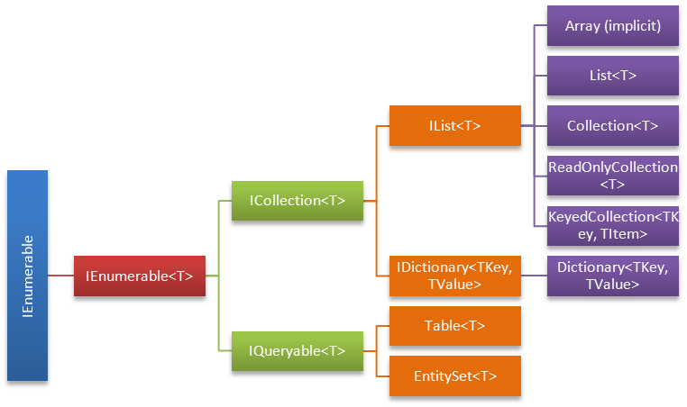

C# course
Lecture 9
LINQ part 1
Agenda
- explanation, motivation
- LINQ & collections (needs of LINQ while working with collections)
- extension methods in LINQ context
- syntax forms
- LINQ to Objects
- understanding var and IEnumerable in LINQ context
- functional programming and lambda in context
What is LINQ?
- stands for “Language INtegrated Query”
- is a set of features that extends powerful query capabilities to the language syntax of C# and Visual Basic
- introduces standard, easily-learned patterns for querying and updating data,
What is LINQ?
- the technology can be extended to support potentially any kind of data store.
- Visual Studio includes LINQ provider assemblies that enable the use of LINQ with
- .NET Framework collections
- SQL Server databases
- ADO.NET Datasets
- XML documents
http://msdn.microsoft.com/en-us/netframework/aa904594.aspx http://weblogs.asp.net/dixin/introducing-linq-1-what-is-linq
Motivation
LINQ to Objects
Suppose you have a data source:
int[] source = { 0, -5, 12, -54, 5, -67, 3, 6 };
|
{ 12, 5, 3, 6 };
|
{ 12, 6, 5, 3 };
|
C# 2.0:
List<int> results = new List<int>();
foreach (var i in source)
{
if (i > 0)
{
results.Add(i);
}
}
results.Sort((x1, x2) => x2 - x1);
|
LINQ to Objects
var results = source.Where(i => i > 0)
.OrderByDescending(i => i);
|
var results = from i in source
where i > 0
orderby i descending
select i;
|
LINQ to SQL
Only changinge data source we can query SQL database
database.Products
.Where(p => p.ProductName == "Beverages")
.Select(p => new Product
{
ProductName = p.ProductName,
UnitPrice = p.UnitPrice
});
|
from product in database.Products
where product.Category.CategoryName == "Beverages"
select new Product
{
ProductName = product.ProductName,
UnitPrice = product.UnitPrice
};
|
One way to query different data sources
LINQ to Wikipedia
wiki.Query.categorymembers()
.Where(c => c.title == "Category:Mammals of Indonesia")
.Select(c => c.title)
.ToEnumerable();
|
OR
(from cm in wiki.Query.categorymembers()
where cm.title == "Category:Mammals of Indonesia"
select cm.title)
.ToEnumerable();
|
Infrastructure of LINQ

LINQ providers
Key benefits
- Independent to data source
- Strong typing
- Query compilation
- Deferred execution
What does LINQ consists of?
- Automatic Property
- Object Initializer And Collection Initializer
- Type Inference
- Anonymous Type
- Extension Method
- Lambda Expression
- Query Expression
LINQ and collections

Extension methods in LINQ context
How horrible it looks without extension methods:
IEnumerable<string> query =
Enumerable.Select(
Enumerable.OrderBy(
Enumerable.Where(
names, n => n.Contains("a")
), n => n.Length
), n => n.ToUpper()
);
|
IEnumerable<string> query = names.Where(n => n.Contains("a"))
.OrderBy(n => n.Length)
.Select(n => n.ToUpper());
|
Extension methods in LINQ context
It could be even readable like this:
var period = 8.June(2014).To(DateTime.Today)
.Step(1.Days())
.Select(d => d.Date);
foreach (DateTime day in period)
{
Console.WriteLine(day);
}
|
Query expression vs fluent syntax
Fluent syntax is shorter with simple where:
var adults = people.Where(person => person.Age >= 18);
|
vs
var adults = from person in people
where person.Age >= 18
select person;
|
Query expression vs fluent syntax
Query expressions shine with joins:
from defect in SampleData.AllDefects
join subscription in SampleData.AllSubscriptions
on defect.Project equals subscription.Project
select new { defect.Summary, subscription.EmailAddress };
|
vs
SampleData.AllDefects.Join(SampleData.AllSubscriptions,
defect => defect.Project,
subscription => subscription.Project,
(defect, subscription) => new
{
defect.Summary,
subscription.EmailAddress
});
|
Query expression vs fluent syntax
And ordering:
orderby item.Rating descending, item.Price, item.Name
|
instead of:
.OrderByDescending(item => item.Rating)
.ThenBy(item => item.Price)
.ThenBy(item => item.Name);
|
Query expression vs fluent syntax
But bear in mind that you cannot write everything in query expressions
(from product in SampleData.AllProducts
where product.Category.CategoryName == "Beverages"
orderby product.ProductName
select product) // Query expression cannot do pagination.
.Skip(50) // So it has to be mixed with query methods.
.Take(10);
|
Query expression == fluent sytax
From compiler perspective query expressions are just syntactic sugar and it always translates them into method calls
For example following code
from person in people
where person.Age >= 18
select person;
|
var adults = people.Where(person => person.Age >= 18);
|
IEnumerable helps to LINQ to rock and roll
LINQ query can produce one of two results:
enumeration
IEnumerable<int> res = from s in sequance
where s > 3
select s;
|
scalar (statistic)
int res = (from s in sequance
where s > 3
select s).Count();
|
LINQ to Objects
Subset of LINQ which - is executed in memory - with any .NET collection which implements IEnumerable interface - without any intermediate provider such as LINQ to SQL or LINQ to XML
Why to use VAR in LINQ context
Always use VAR storing result of query because...
IEnumerable<IGrouping<string, Person>> result = people.GroupBy(n => n.Name);
|
vs
var result = people.GroupBy(n => n.Name);
|
Why to use VAR in LINQ context
It can be an enumeration of anonymous types:
var result = from person in people
select new {person.Name, person.Surname};
|
Why to use VAR in LINQ context
You never know how you will change your LINQ query therefore VAR will help you to not change resulting type with a small change:
var result = from person in people
select new Person { Name = person.Name, Surname = person.Surname };
|
var result = from person in people
group person by person.Name;
|
What is Lambda (λ-calculus)?
Lambda calculus is a formal system to use functions and function application to express computation In simple words it says that any computation can be built by applying simple function which may compose complex (high-order) functions
It was introduced in 1930s by Alonzo Church, the doctoral advisor of Alan Turing
Lambda in C# context
Is fancy feature introduced in C# 3.0:
MyDel del = delegate(int x) { return x + 1; } ; // Anonymous method
MyDel le1 = (int x) => { return x + 1; } ; // Lambda expression
MyDel le2 = (x) => { return x + 1; } ; // Lambda expression
MyDel le3 = x => { return x + 1; } ; // Lambda expression
MyDel le4 = x => x + 1 ; // Lambda expression
|
Functional programming in LINQ context
Main paradigms of FP: - Closure - Currying - Memoization
Closure
Using variables from scope out of the func:
int age = 20;
Func<int, int> getOlderOn = x => age + x;
|
In LINQ context:
var filter = "Compare";
var query = from m in typeof(String).GetMethods()
where m.Name.Contains(filter)
select new { m.Name, ParameterCount = m.GetParameters().Length };
|
Currying
Create functions that create other functions by adding arguments one by one
var grep = Curry<Regex, IEnumerable<string>, IEnumerable<string>>(
(regex, list) => from s in list
where regex.Match(s).Success
select s);
var grepFoo = grep(new Regex("foo"));
|
Memoization
Simply cache results of functions:
Func<uint, uint> fib = null;
fib = x => x > 1 ? fib(x - 1) + fib(x - 2) : x;
fib = fib.Memoize();
|
Memize
public static Func<A, R> Memoize<A, R>(this Func<A, R> f)
{
var d = new Dictionary<A, R>();
return a=>
{
R r;
if (!d.TryGetValue(a, out r))
{
r = f(a);
d.Add(a, r);
}
return r;
};
}
|
Main benefits of FP:
- Composability
- Lazy evaluation
- Immutability
- Parallelizable
- Declarative
Composability
Ability to compose complex things with a banch of simple ones.
var results = source.Where(item => item > 0 && item < 10)
.OrderBy(item => item)
.Select(item => item.ToString(CultureInfo.InvariantCulture));
|
Lazy evaluation
The query is not evaluated until you iterate it.
var result = from person in people
where person.Age > 21
select new { person.Name, person.Surname };
//at this moment result is not calculated
var realResult = result.ToList();
|
Immutability
The result of any operation is new value
var results = source.Where(item => item > 0 && item < 10) //new enumeration
.OrderBy(item => item) //new enumeration
.Select(item => item.ToString()); //new enumeration
|
Parallelizable
Since everything is immutable - it easier to parallelize
Enumerable.Range(1, 10000)
.AsParallel()
.AsOrdered()
.Where(IsPrimeNumber)
.ToList()
|
Declarative
Allows to write more expressive code
from d in ds.Doctors
join c in ds.Calls
on d.Initials equals c.Initials
where c.DateOfCall >= new DateTime(2015, 10, 1) &&
c.DateOfCall <= new DateTime(2015, 10, 31)
group c by d.Initials into g
select g;
|